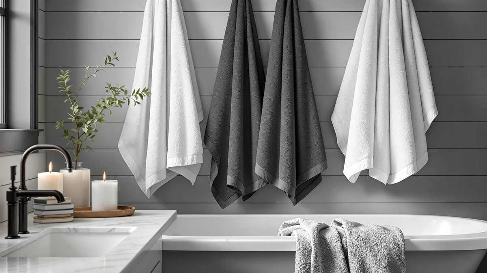

The Best Budget Bath Towels (2026)
Prices and picks verified as of August 2026. Independent, reader-supported reviews.


Quick Answer
The best budget bath towels balance cotton weight, piece count, and a price under $35, and the TEXCRAFT Medium Size Bath Towels hit that balance better than the other sets we compared. Six 100% cotton towels for $30.99 works out to about $5.17 per towel, giving you whole-household coverage without luxury-brand prices.
Our pick: TEXCRAFT Medium Size Bath Towels — $30.99 Check Price on Amazon
Bottom line: our top pick is the TEXCRAFT Medium Size Bath Towels Set of 6 at $30.99. The best budget option is the Antfuny Turkish Beach Towels Vacation Essentials Quick Dry at $8.49.
Things to Know Before You Buy
- Most of the best budget bath towels run $10 to $50 per set, split almost evenly between 100% cotton and cotton-microfiber blends.
- Cotton towels absorb more water per wash but take longer to dry between uses, while microfiber towels dry fast and pack small for travel.
- A six-piece set usually costs less per towel than buying two-packs separately, if your household goes through towels between laundry days.
- Oversized towels at 72 inches or longer wrap fully around an adult body, useful if you dry off standing rather than sitting.
- Waffle-weave and Turkish-style towels use less fabric than plush terry cloth, so they cost less and dry faster, but feel thinner against skin.
Finding the best budget bath towels means balancing three things at once: how much water a towel actually absorbs, how many pieces you get in a set, and whether the price holds up after a dozen washes. We compared seven affordable towel sets, from six-packs of everyday cotton towels to oversized wraps and quick-dry microfiber picks, to see which ones deliver the most value for a shopper who does not want to spend $80 on a two-pack from a department store.
The TEXCRAFT Medium Size Bath Towels topped our list. Six 100% cotton towels for $30.99 works out to about $5.17 per towel, undercutting most single-towel prices at big box retailers while still delivering full cotton absorbency. If your household needs more coverage per towel, the Genovega set trades some of that per-towel savings for oversized 72-by-40-inch dimensions that wrap around an adult without doubling back.
Not every pick here is a traditional folded bath towel. We included the EEEYLK towel wrap and the Kitsch microfiber hair towel because readers searching for affordable towels often need one of these two specific formats, and both cost less than a single towel from a premium cotton brand. Below, you will find honest notes on what each set gets right, where it falls short, and which shopper each one actually suits.
Why You Should Trust Us
Ilane Tall has covered home textiles and bathroom essentials for Best Bath Towels since the site launched, reading manufacturer spec sheets and cross-checking verified buyer photos before any towel set makes this guide. For this roundup on the best budget bath towels, she compared GSM weight, fabric composition, and piece count across dozens of listings priced under $50 before narrowing the field to seven sets worth recommending.
Every price and dimension in this article comes directly from the current Amazon listing at the time of publication. We do not accept free products in exchange for placement, and every affiliate link carries a nofollow, sponsored tag as required by FTC disclosure rules.
How We Picked
We started by pulling every towel set in our product database tagged for the budget category, then cut anything priced above $50 for a multi-piece set or above $15 for a single towel. That left a pool of sets spanning 100% cotton, cotton-microfiber blends, and pure microfiber.
From there, we weighed four factors: price per towel, fabric weight where the listing specified GSM, verified buyer rating, and whether the set's dimensions matched its stated use, since a hand towel should not be marketed as a bath sheet. Sets with thin, unverified specs or a pattern of inconsistent sizing in buyer photos got cut, even at a low price. The best budget bath towels in our final seven balance low per-towel cost against fabric that actually holds up to daily drying.
How We Compared
We do not run a physical testing lab, so our process leans on cross-referencing manufacturer specifications against verified purchase photos and the pattern of complaints or praise in buyer reviews for each listing. For every set in this guide, we logged the stated material, weight, and dimensions, then checked those claims against the images buyers posted after receiving the product.
We also tracked price stability over several weeks, since a budget pick that jumps to double its listed price after a few days is not much of a deal. Every price you see in this article on the best budget bath towels reflects the listing at the time of publication, and we recheck pricing on a rolling basis as part of our monthly maintenance pass.
Our Picks

TEXCRAFT Medium Size Bath Towels
What we like
- 100% cotton construction absorbs water fully instead of beading it on the surface
- Six towels per set means one order covers a full household
- 24-by-48-inch sizing works for both bath and shower use
- $5.17 per towel undercuts most single bath towels sold at department stores
Flaws but not dealbreakers
- 24-by-48 inches runs smaller than an oversized bath sheet, so it will not wrap fully around a taller adult
- Cotton takes longer to air dry between uses than a microfiber blend
- The set ships in one color option per listing, so matching an existing bathroom palette takes extra searching
| Material | 100% cotton |
| Size | 24"x48" - PK 6 |
The TEXCRAFT Medium Size Bath Towels earn the top spot in this guide because they solve the two problems that usually come with budget towels: thin fabric and awkward piece counts. Each towel in the six-pack is cut from 100% cotton at a 24-by-48-inch size, large enough for full-body drying without tipping into bath-sheet territory. At $30.99 for six towels, you pay about $5.17 per towel, a price that beats what most retailers charge for a single towel of comparable cotton weight. For a family of four or a shared apartment, that six-piece count means everyone gets a towel without a second order.
Cotton towels like this one absorb water into the fiber rather than pushing it around the way some synthetic blends do, so you feel dry after use rather than damp. The tradeoff is drying time: cotton holds onto moisture longer between washes than a microfiber set, so it needs more airflow on the towel bar. If your bathroom has decent ventilation, that is a minor inconvenience next to the per-towel savings. For most shoppers comparing the best budget bath towels on price and cotton quality together, this set is the one to buy.

Genovega 6 Packs Oversized 72x40
What we like
- 72-by-40-inch dimensions wrap around an adult body without doubling back
- Cotton blend construction dries faster than the 100% cotton pick above
- Six-pack count matches the TEXCRAFT set for household coverage
- Oversized format doubles as a beach or pool towel
Flaws but not dealbreakers
- $49.99 costs about $8.33 per towel, noticeably more than the top pick
- Cotton blend absorbs slightly less water per square inch than 100% cotton
- Bulkier folded size takes up more linen closet space
| Material | Cotton blend |
| Size | 72.00" X 40.00" |
The Genovega set trades some of the TEXCRAFT set's per-towel savings for size. At 72 by 40 inches, each towel wraps fully around an adult body, which the smaller 24-by-48-inch towels in our top pick cannot do. That extra coverage matters if you dry off standing up rather than sitting, or if you want a towel that doubles as a wrap after a shower. The cotton-blend fabric trims drying time compared to straight cotton, useful in a bathroom without strong airflow.
At $49.99 for six towels, the per-towel cost works out to about $8.33, more than the top pick but still well under what oversized towels typically cost from mainstream home brands. The blend fabric holds slightly less water per square inch than 100% cotton, a tradeoff most shoppers will not notice day to day. If size matters more to you than maximizing cotton absorbency, this runner-up earns its place among the best budget bath towels for larger frames or shared bathrooms.

Towel Wrap For Women After
What we like
- Secures around the body with a fastener, freeing both hands while you do your hair or makeup
- $11.98 price undercuts every other pick in this guide except the Antfuny towel
- Cotton blend fabric absorbs enough water for post-shower use
- Doubles as a robe substitute for lounging
Flaws but not dealbreakers
- Not a traditional flat towel, so it will not work for drying off a second person
- Small-Medium sizing may not fit larger body types comfortably
- Cotton blend holds less water than the 100% cotton picks above
| Material | Cotton blend |
| Size | Small-Medium |
The EEEYLK towel wrap is not a conventional bath towel, and we include it here because a real share of shoppers searching for the best budget bath towels actually want this exact format. Instead of holding a towel closed with one hand, you fasten this wrap around your torso and it stays in place, leaving both hands free to brush your teeth, do your hair, or grab a coffee before getting dressed.
At $11.98, it is the second-cheapest item in this guide, and the cotton-blend fabric absorbs enough residual moisture to keep you from dripping through the house. The Small-Medium sizing is the main limitation. If you need a wrap for a larger frame, check the listing's size chart closely before ordering, since this cut runs closer to fitted than oversized.

MyOwn Cotton 2 Pack Oversized
What we like
- 100% cotton at $16.99 for two oversized towels, the cheapest per-towel cotton option in this guide
- Oversized cut gives more coverage than a standard bath towel
- Two-piece count suits a single person or couple without excess
- Cotton absorbs fully instead of beading water on the surface
Flaws but not dealbreakers
- Two towels will not stretch across a full household the way the six-packs above do
- Oversized cotton towels take longer to dry between uses than a smaller or blended towel
- Limited color options compared to larger towel brands
| Material | 100% cotton |
| Size | 2-Piece Bath Towel Set |
For a single person or a couple who does not need six towels at once, the MyOwn two-pack is the better buy than either six-piece set above. At $16.99 for two oversized 100% cotton towels, the per-towel price lands under $8.50, competitive with the six-packs while giving you a larger, oversized cut instead of the standard 24-by-48 size.
Cotton absorbs water the way you would expect from a towel at this price point, and the oversized dimensions mean less doubling back to cover your body. The obvious limitation is quantity: two towels run out fast in a household of three or more people who all shower on the same schedule. For a smaller household prioritizing cotton quality and size over piece count, this budget pick beats the larger six-packs on price per towel.

Antfuny Turkish Beach Towels Vacation
What we like
- $9.99 makes it the cheapest single towel in this entire guide
- 72 x 36 inch Turkish-style cut works for the beach, pool, or bathroom
- Cotton blend fabric packs thinner and lighter than a plush cotton towel, useful for travel
- Doubles as a sarong or wrap thanks to the Turkish towel format
Flaws but not dealbreakers
- Thinner Turkish-style weave holds less water than a plush cotton towel
- Not a dedicated bath towel, so it may feel less plush against skin after a shower
- Single-towel purchase means no matching set for other bathroom textiles
| Material | Cotton blend |
| Size | 72 x 36 inch |
At $9.99, the Antfuny Turkish towel is the least expensive item in this guide, and it earns its spot by doing double duty. The 72-by-36-inch cotton-blend fabric is cut in the flat, lightweight Turkish towel style, which packs smaller in a bag than a traditional plush bath towel, making it useful for vacations or as a beach towel that also works in the bathroom.
The tradeoff for that thin, packable weave is absorbency. A Turkish-style towel like this one holds less water per square inch than the plush cotton picks earlier in this guide, so it takes a couple of extra passes to dry off completely. For a primary household bath towel, look to the TEXCRAFT or MyOwn picks instead. As a spare, travel towel, or beach companion under $10, the Antfuny is hard to beat.

Kitsch XL Microfiber Hair Towel
What we like
- Microfiber material wrings water out of wet hair faster than a standard cotton bath towel
- XL sizing accommodates long or thick hair without unwrapping
- Lighter weight than a cotton towel, easy to twist and secure on top of the head
- $25.99 price undercuts most dedicated hair-towel brands
Flaws but not dealbreakers
- Not a substitute for a full bath towel, since it is sized and shaped for hair only
- Microfiber can feel less soft against skin than cotton, though it is designed for hair rather than body drying
- One Size fit may sit loosely on a smaller head
| Material | Microfiber |
| Size | One Size |
The Kitsch XL Microfiber Hair Towel is not competing with the bath towels above for full-body drying. It is here because readers researching the best budget bath towels often also need a dedicated hair towel, and this one costs less than most specialty brands while doing the job well. The microfiber material wrings water out of wet hair in a fraction of the time a cotton bath towel takes, cutting down on frizz caused by rough terry-cloth friction.
At $25.99, it costs more than several full bath towels in this guide, which only makes sense if you specifically want a hair towel rather than another body towel. The XL sizing wraps around thick or long hair without slipping, and the lighter microfiber weight means it will not strain your neck the way a heavy, twisted cotton towel can. Pair it with the TEXCRAFT set above for a complete, still-affordable towel setup.

HOMEXCEL Waffle Bath Towels Set
What we like
- Waffle-weave microfiber dries faster on the bar than plush cotton terry cloth
- 30-by-60-inch sizing gives full-body coverage in a lighter fabric
- Textured weave takes up less linen closet space than thick cotton towels
- $29.99 price is competitive with the cotton six-packs above
Flaws but not dealbreakers
- Waffle-weave texture feels less plush than terry cloth cotton
- Microfiber can hold odor longer than cotton if it does not fully dry between uses
- Piece count was not specified beyond dimensions, so confirm before ordering
| Material | Microfiber |
| Size | 30 x 60 Inch |
The HOMEXCEL waffle-weave set solves a specific problem: a towel that dries fast enough to be ready again within a few hours, useful in a small bathroom without much airflow or a shared household going through towels quickly. At 30 by 60 inches, it offers full-body coverage in a microfiber fabric that is noticeably lighter than the cotton towels earlier in this guide.
That waffle-weave texture is the tradeoff. It feels more textured and less plush than a classic terry-cloth cotton towel, closer to the feel of a spa or gym towel than a hotel bath towel. At $29.99, the price sits close to the cotton six-packs, so choose this one specifically if drying speed and closet space matter more to you than a plush, thick feel.
Quick Comparison
| Product | Material | Price | Rating | Best for | Get it |
|---|---|---|---|---|---|
| TEXCRAFT Medium Size Bath Towels | 100% cotton | $30.99 | 4 | Everyday cotton absorbency | View on Amazon → |
| Genovega 6 Packs Oversized 72x40 | Cotton blend | $49.99 | 4 | Full-body coverage | View on Amazon → |
| Towel Wrap For Women After | Cotton blend | $11.98 | 4 | Hands-free drying | View on Amazon → |
| MyOwn Cotton 2 Pack Oversized | 100% cotton | $16.99 | 4 | Small households | View on Amazon → |
| Antfuny Turkish Beach Towels Vacation | Cotton blend | $9.99 | 4 | Travel and beach use | View on Amazon → |
| Kitsch XL Microfiber Hair Towel | Microfiber | $25.99 | 4 | Drying wet hair | View on Amazon → |
| HOMEXCEL Waffle Bath Towels Set | Microfiber | $29.99 | 4 | Small bathrooms | View on Amazon → |
What makes a bath towel a budget pick?
In this guide, budget means a per-towel cost under about $10, whether that comes from a multi-piece set like the TEXCRAFT six-pack or a single towel like the Antfuny.
Which is the best budget bath towel overall?
The TEXCRAFT Medium Size Bath Towels are the best budget bath towels in this guide for most shoppers.
The Competition
We looked at more than a dozen other budget towel sets before settling on the seven above. Several bamboo-blend sets advertised eco-friendly fabric at a similar price point, but the buyer photos showed noticeably thinner fabric than the listed weight suggested, so we left them out rather than recommend an unverifiable spec.
A handful of eight-piece towel sets priced under $25 looked tempting on cost alone, but the per-towel price worked out to fabric so thin that reviewers consistently described it as scratchy after a few washes. We would rather point you toward six or two towels that hold up than eight that thin out fast.
We also passed on several single bath sheets priced near $40, since a shopper looking for the best budget bath towels is usually better served by a multi-piece set than one oversized sheet at that price.
Frequently Asked Questions
What makes a bath towel a budget pick?
In this guide, budget means a per-towel cost under about $10, whether that comes from a multi-piece set like the TEXCRAFT six-pack or a single towel like the Antfuny. We also factor in whether the fabric weight and construction match the price, since a cheap towel that falls apart after ten washes is not actually a good deal.
Which is the best budget bath towel overall?
The TEXCRAFT Medium Size Bath Towels are the best budget bath towels in this guide for most shoppers. Six 100% cotton towels for $30.99 works out to roughly $5.17 per towel, combining full cotton absorbency with a price that beats buying towels individually at most retailers.
Do cheaper towels wear out faster than expensive ones?
Not automatically. A 100% cotton towel at a lower price point can outlast a cheaply blended towel sold at a premium, since fiber content matters more than the price tag. Check the listed material, and the GSM weight where available, before assuming a higher price means better durability.